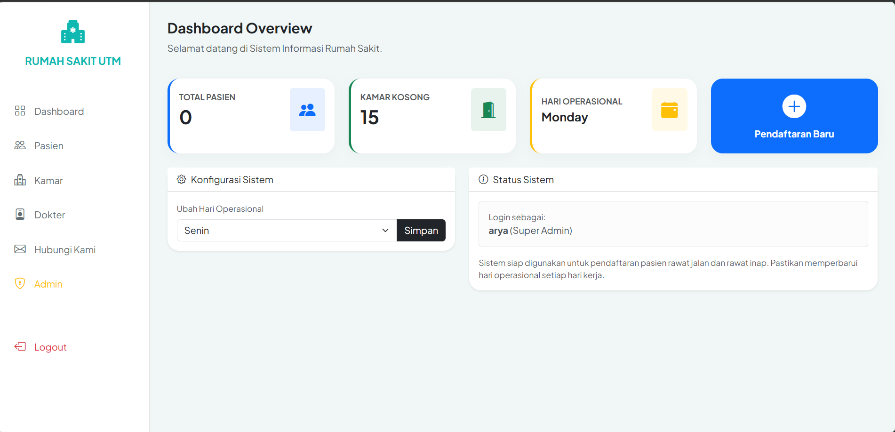

Project Pilihan
Karya yang menggabungkan analisis dan fungsionalitas.
Desain Stiker Makrab
Stiker Makrab - Membantu melancarkan acara makrab UKMFT-ITC 2026

Sistem Manajemen RS
Web Application - Mengelola data pasien dan jadwal dokter secara real-time.